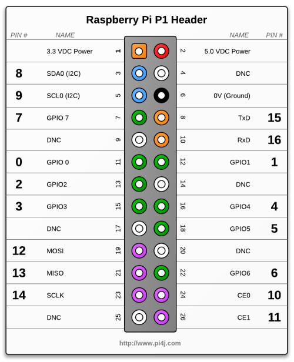
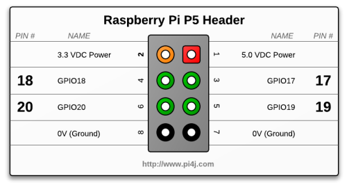

To implement Pi4J, you will need to include a number of Pi4J packages into your project classes. The following list includes the majority of the Pi4J imports that you would need. You probably will not require all of these imports in your project, you can remove any unused imports.
import com.pi4j.io.gpio.GpioController; import com.pi4j.io.gpio.GpioFactory; import com.pi4j.io.gpio.GpioPin; import com.pi4j.io.gpio.GpioPinDigitalInput; import com.pi4j.io.gpio.GpioPinDigitalOutput; import com.pi4j.io.gpio.PinDirection; import com.pi4j.io.gpio.PinMode; import com.pi4j.io.gpio.PinPullResistance; import com.pi4j.io.gpio.PinState; import com.pi4j.io.gpio.RaspiPin; import com.pi4j.io.gpio.trigger.GpioCallbackTrigger; import com.pi4j.io.gpio.trigger.GpioPulseStateTrigger; import com.pi4j.io.gpio.trigger.GpioSetStateTrigger; import com.pi4j.io.gpio.trigger.GpioSyncStateTrigger; import com.pi4j.io.gpio.event.GpioPinListener; import com.pi4j.io.gpio.event.GpioPinDigitalStateChangeEvent; import com.pi4j.io.gpio.event.GpioPinEvent; import com.pi4j.io.gpio.event.GpioPinListenerDigital; import com.pi4j.io.gpio.event.PinEventType;
Before interacting with Pi4J, you must first create a new GPIO controller instance. The GpioFactory includes a createInstance method to create the GPIO controller. Your project should only instantiate a single GPIO controller instance and that instance should be shared across your project.
// create gpio controller instance final GpioController gpio = GpioFactory.getInstance();
Pi4J uses an abstract pin numbering scheme to help insulate software from hardware changes. P14J implements the same pin number scheme as the Wiring Pi project. More information about the WiringPi pin number scheme can be found here: https://projects.drogon.net/raspberry-pi/wiringpi/pins/
Pi4J provides a Pin enumeration that is used to manage the accessible GPIO pins.
(click here for hi-resolution image)
NOTE: The P5 header is only available on board revisions 2.0 and newer.
To access a GPIO pin, you must first provision the pin.
Provisioning configures the pin based on how you intend to use it. Provisioning can automatically export the pin, set its direction, and setup any edge detection for interrupt based events.
The following example demonstrates how to provision an INPUT pin. Input pins are pins that your program will monitor for state change or interrogate state when needed. Input pins are used for switches, sensors, etc.
// provision gpio pin #02 as an input pin with its internal pull down resistor enabled
// (configure pin edge to both rising and falling to get notified for HIGH and LOW state
// changes)
GpioPinDigitalInput myButton = gpio.provisionDigitalInputPin(RaspiPin.GPIO_02, // PIN NUMBER
"MyButton", // PIN FRIENDLY NAME (optional)
PinPullResistance.PULL_DOWN); // PIN RESISTANCE (optional)
The following example demonstrates how to provision an OUTPUT pin.
Output pins are pins that your program will control state changes. Output pins are used for controlling relays, LEDs, transistors, etc.
// provision gpio pins #04 as an output pin and make sure is is set to LOW at startup
GpioPinDigitalOutput myLed = gpio.provisionDigitalOutputPin(RaspiPin.GPIO_04, // PIN NUMBER
"My LED", // PIN FRIENDLY NAME (optional)
PinState.LOW); // PIN STARTUP STATE (optional)
P14J provides a number of convenience method for controlling or writing a state to a GPIO pin.
The examples below demonstrate a few of the controlling methods you can invoke on a GPIO pin.
// explicitly set a state on the pin object
myLed.setState(PinState.HIGH);
// use convenience wrapper method to set state on the pin object
myLed.low();
myLed.high();
// use toggle method to apply inverse state on the pin object
myLed.toggle();
// use pulse method to set the pin to the HIGH state for
// an explicit length of time in milliseconds
myLed.pulse(1000);
A complete example project demonstrating the control of GPIO pins is provided here.
P14J provides a number of convenience method for reading/interrogating the current state to a GPIO pin.
The examples below demonstrate a few of the reading methods you can invoke on a GPIO pin.
// get explicit state enumeration for the GPIO pin associated with the button
PinState myButtonState = myButton.getState();
// use convenience wrapper method to interrogate the button state
boolean buttonPressed = myButton.isHigh();
Pi4J provides an implementation for monitoring GPIO pin interrupts. This is a far more efficient method for actively monitoring pin states versus constantly polling and interrogating the pin state.
You must create a class that implements the GpioListener interface. This interface simply contain a single method pinStateChanged(GpioPinStateChangeEvent event) that is used to notify the listener class when a pin change event has occurred.
The following snippet demonstrates a simple listener implementation:
public static class GpioUsageExampleListener implements GpioPinListenerDigital {
@Override
public void handleGpioPinDigitalStateChangeEvent(GpioPinDigitalStateChangeEvent event) {
// display pin state on console
System.out.println(" --> GPIO PIN STATE CHANGE: " + event.getPin() + " = "
+ event.getState());
}
}
To setup your listener, you must register the listener with a pin and instantiate your listener impl.
// create and register gpio pin listener myButton.addListener(new GpioUsageExampleListener());
A complete example project demonstrating the listening for GPIO pin state changes is provided here.
Pi4J provides an implementation to automatically set GPIO pin states when the application is terminated. This is useful to ensure that the GPIO pins states are not active or leaving some activity engaged if the program is shutdown.
You can simply use the setShutdownOptions method on the GpioPin instance to configure the desired shutdown behavior to be applied. The following snippet demonstrates a simple GPIO pin shutdown configuration implementation:
// configure the pin shutdown behavior; these settings will be // automatically applied to the pin when the application is terminated // ensure that the LED is turned OFF when the application is shutdown myLed.setShutdownOptions(true, PinState.LOW, PinPullResistance.OFF);
A complete example project demonstrating the GPIO pin shutdown configuration is provided here.
P14J provides a series of GpioTriggers that can perform actions on GPIO pins based on the state change of another pin. Triggers also provide an extensible interface that allow you to extend and create your own custom triggers. The following snippet demonstrates a simple ''follow-me' trigger implementation:
// create a gpio synchronization trigger on the input pin // when the input state changes, also set LED controlling gpio pin to same state myButton.addTrigger(new GpioSyncStateTrigger(myLed));
A complete example project demonstrating the GPIO pin triggers is provided here.
(This example includes all available provided triggers.)
P14J provides a simplified API to send and receive data using a serial port of the Raspberry's Pi.
The following example project demonstrates implementing serial communication:
Serial Communication Example.
P14J provides an API to access system and network information from the Raspberry's Pi.
The following example project demonstrates accessing system and network information:
System Information Example.
{kind=link}
{kind=link}